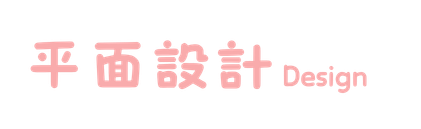

專業經歷 Professional Experience
Slide ➔Founder & Chief Executive Officer
Aug. 2025 - Present主導數位轉型與網頁開發專案管理、商務洽談與公司營運，將技術架構轉化為實質商業價值，並帶領團隊參展 2026 亞灣新創大展。
Lead full-cycle digital transformation projects, client negotiations, and corporate operations, translating complex tech architecture into business value and directing startup showcases.
AR Animation Designer Intern
July 2024 - Aug. 2024於 320 小時密集實習中，負責擴增實境（AR）動態設計與沉浸式互動視覺體驗開發。
Designed and implemented augmented reality (AR) animations and interactive visual experiences over a 320-hour intensive internship.
研究經歷 Research Experience
Slide ➔Research Assistant
Mar. 2026 - Present負責學術問卷統計分析、學術論文撰寫協助與研討會簡報製作。
Conduct questionnaire statistical analysis, assist in academic manuscript writing, and produce conference presentations.
Research & Administrative Assistant
July 2023 - July 2025運用 SPSS、SmartPLS 與 RStudio 進行高階數據分析與論文撰寫，並透過 Scopus 進行 STEM 書目計量分析與實驗室行政人事管理。
Performed advanced data analysis with SPSS, SmartPLS, and RStudio, analyzed STEM bibliometric trends via Scopus, and managed lab administration.
